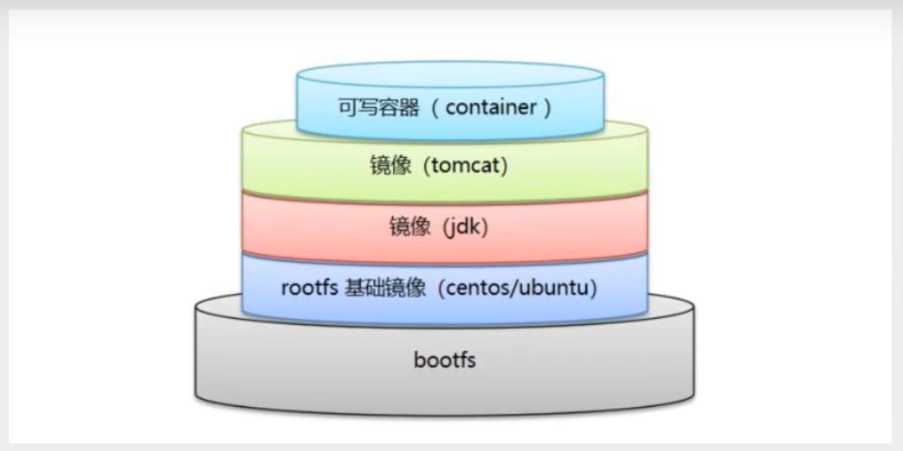

用来构建docker 镜像的文件！命令参数脚本！
构建步骤：
1、编写一个dockerfile 文件
2、docker build 构建称为一个镜像
3、docker run运行镜像
4、docker push 发布镜像（DockerHub、阿里云镜像仓库）
DockerFile构建过程
基础知识：
1、每个保留关键字（指令）都必须是大写字母；
2、执行从上到下顺序执行；
3、#表示注释
4、每一个指令都会创建提交一个新的镜像层，并提交！

dockerfile是面向开发的，以后要发布项目，作镜像，就需要编写dockerfile文件！
DockerFile：构建文件。定义了一切的步骤；
DockerImages：通过DockerFile构建生成的镜像，最终发布和运行的产品；
Docker容器：容器就是镜像运行起来提供服务的服务器；
DockerFile命令

FROM #基础镜像
MAINTAINER #镜像是谁写的，姓名+邮箱
RUN #镜像都贱的时候需要运行的命令
ADD #步骤，tomcat镜像，这个tomcat压缩包，添加内容
WORKDIR #镜像的工作目录
VOLUME #挂载的目录
EXPOSE #暴露端口配置
CMD #指定这个容器启动的时候要运行的命令， 只有最后一会生效，可被替代
ENTRYPOINT #指定这个容器启动时要运行的命令，可以追加命令
ONBUILD #当构建一个被继承 DockerFile 这个时候就会运行ONBUILD指令。
COPY #类似于ADD，将文件拷贝到镜像中
ENV #构建的时设置环境变量
实战一：构建自己的centos
（使其拥有vim软件和ifconfig功能）
Docker Hub中99%的镜像都是从 scratch 开始 （FROM scratch）
FROM centos
MAINTAINER likang<lkang_0x@163.com>
ENV MYPATH /usr/local #ENV 是以键值对的形式指定的
WORKDIR $MYPATH
RUN yum -y install vim
RUN yum -y install net-tools #网络常用的命令
EXPOSE 80
CMD echo $MYPATH
CMD echo "----end----"
CMD /bin/bash
#构建镜像
docker build -f dockerfile文件路径 -t 镜像名 镜像生成的路径
#测试运行
run
#查看镜像的构建历史
docker history 镜像id
CMD和ENTRYPOINT的区别：
CMD是替换，ENTRYPOINT是追加。
测试CMD


测试 ENTRYPOINT


实战二：Tomcat镜像
1、准备：tomcat压缩包，jdk压缩包，镜像文件,准备文件readme.txt
2、编写镜像文件
编写dockerfile文件，官方命名Dockerfile，build的时候会自动寻找这个文件，不需要-f 指定路径了。
FROM centos:8
MAINTAINER likang<lkang_0x@163.com>
#cpoy readme.txt进镜像
COPY readme.txt /usr/local/readme.txt
#将JDK和Tomcat解压到镜像，ADD指令自动解压
ADD jdk-8u301-linux-x64.tar.gz /usr/local
ADD apache-tomcat-10.0.10.tar.gz /usr/local
# 下载vim命令
RUN yum -y install vim
#配置环境变量
ENV MYPATH /usr/local
#指定镜像的工作目录
WORKDIR $MYPATH
ENV JAVA_HOME /usr/local/jdk1.8.0_301
ENV CLASSPATH $JAVA_HOME/lib/dt.jar:$JAVA_HOME/lib/tools.jar
ENV CATALINA_HOME /usr/local/apache-tomcat-10.0.10
ENV CATALINA_BASH /usr/local/apache-tomcat-10.0.10
ENV PATH $PATH:$JAVA_HOME/bin:$CATALINA_HOME/bin:$CATALINA_HOME/lib
EXPOSE 8080
#启动镜像执行的命令，可以&&多条。
CMD /usr/local/apache-tomcat-10.0.10/bin/startup.sh && tail -F /usr/local/apache-tomcat-10.0.10/logs/catalina.out
3、构建镜像
4、启动镜像
5、访问测试
6、发布项目（由于做了卷挂载，直接在本地编写项目就可以发布了）
7、运行测试
出现的问题：1、在构建镜像的时候报错：
ADD failed: file not found in build context or excluded by .dockerignore: stat home/likang/tools/jdk-8u301-linux-aarch64.tar.gz: file does not exist
在网上查找原因： dockerfile 不能获取 父目录
解决：将压缩包放在 dockerfile的同级目录，build成功。
2、在ADD的时候
开始的时候是：
ADD jdk-8u301-linux-aarch64.tar.gz /usr/local/
ADD apache-tomcat-10.0.10.tar.gz /usr/local/
然后创建的容器第二个apache-tomcat-10.0.10.tar一直是空目录。
更改为：
ADD jdk-8u301-linux-aarch64.tar.gz /usr/local
ADD apache-tomcat-10.0.10.tar.gz /usr/local
之后，两个文件就都ok了。
这个原因可能是因为：ADD指令的功能太多，这种解释似乎是ADD尝试做的太多了，让用户有些疑惑。很明显，没人想要打破向后兼容性。所以决定新增一个行为更加明确的指令。
Docker 团队的建议是在大多数情况下使用COPY。拷贝文件的原则：使用COPY（除非你明确你需要ADD）
然后更改为
ADD jdk-8u301-linux-aarch64.tar.gz /usr/local/
ADD apache-tomcat-10.0.10.tar.gz /usr/local/
发现又好了，我觉的可能和docker的分层文件系统有关（可能存在缓存吧）。
发现是 ENV CATALINA_HOME /usr/local/tomcat路径 出现的问题。汗汗汗！！！！
3、这个应该是最后一个问题，在JDK下载错误之后，在更改JDK之后，所有的配置也都没有问题，但是docker容器一直运行不起来。因为dockerfile文件中最后执行的命令是：CMD /usr/local/apache-tomcat-10.0.10/bin/startup.sh
它运行一次之后，就结束了（这个命令就结束了，而不是tomcat服务结束了），容器就跟着关闭了，更改为：CMD /usr/local/apache-tomcat-10.0.10/bin/startup.sh && tail -F /usr/local/apache-tomcat-10.0.10/logs/catalina.out
tail -f filename 会把 filename 文件里的最尾部的内容显示在屏幕上，并且不断刷新，只要 filename 更新就可以看到最新的文件内容。所以这条命令是一直在前台运行的，容器不会关闭。 (docker容器必须要有一个前台进程，否则就会自己关闭)
tomcat在windows下启动是通过startup.bat脚本，其中都是一些dos命令。会启动一个命令行并显示日志信息。但是在linux下启动通过start.sh文件，是shell脚本文件，在后台运行，并不会启动前台进程。
以上的实践： 尝试了很多次报错：最后发现是JDK下载错误。
下载的JDK是 jdk-8u301-linux-aarch64.tar.gz ，基于APM（CPU）的JDK，更改为


命令：
docker save -o 压缩路径 镜像ID/镜像名
docker load -i 读取路径